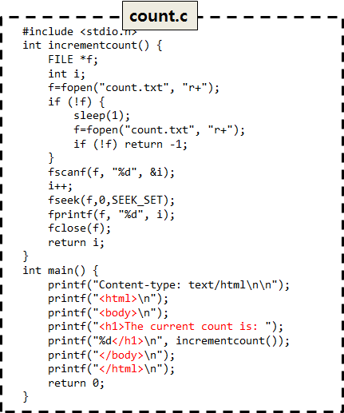
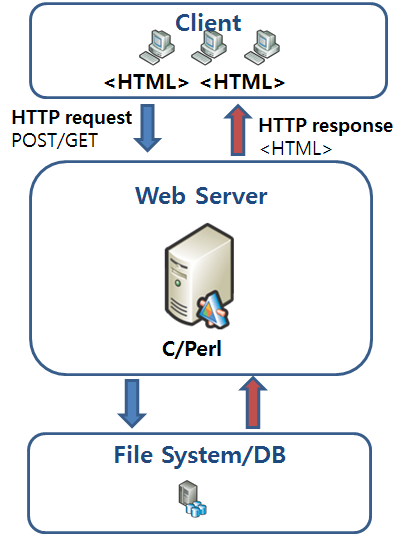

웹개발의 변화
이미지를 최소화하고 텍스트 위주로 이루어진 정보전달 목적의 정적 웹페이지가 대부분.
주로 Perl 이나 C를 사용한 CGI를 통해 동적인 페이지를 제공.
html코드가 서버측 언어(Perl, C)안에 혼합되어 있어 Perl, C등을 함께 알아야 했고 대부분의 정적인 페이지들은 파일을 사용해도 대부분의 정보를 감당할 수 있었기 때문에 DB를 적극적으로 사용하지 않음.
상대적으로 CGI 가 돌아가는 웹서버의 역할이 매우 컸고, 클라이언트와 데이터베이스의 역할은 작았음.
 
정적인 데이터와 텍스트뿐만 아니라 다양한 미디어들이 사용되며 사용자와 상호작용을 할 수 있게된다. ActiveX, 플래시 애니메이션이 유행하고 플래시 메뉴가 필수요소로 자리잡기도 했다.
function isSmall() {
return window.matchMedia("(min-device-width: ???)").matches;
}
function hasTouch() {
return Modernizr.touch;
}
function detectFormFactor() {
var device = DESKTOP;
if (hasTouch()) {
device = isSmall() ? PHONE : TABLET;
}
return device;
}
This content should be centered!
Important contact information goes here.